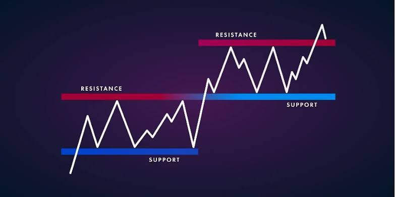

Comment ça marche ?

Analyse Technique
L'analyse technique consiste en l'étude des graphiques des cours de bourse et des différents indicateurs déduits des cours dans le but de potentiellement prévoir l'évolution des marchés.
Analyse Fondamentale
L'analyse fondamentale est une méthode d'évaluation de la valeur intrinsèque d'un actif, basée sur l'examen de facteurs économiques, financiers et qualitatifs.
Psychologie du Trading
La psychologie du trading, ou l'art de gérer ses émotions en trading, est un aspect crucial de la réussite sur les marchés financiers
Votre destination incontournable pour maîtriser les enjeux financiers et atteindre vos objectifs économiques. Que vous soyez débutant ou déjà familiarisé avec le monde de la finance, nous avons les outils et l'expertise nécessaire pour vous aider à progresser.